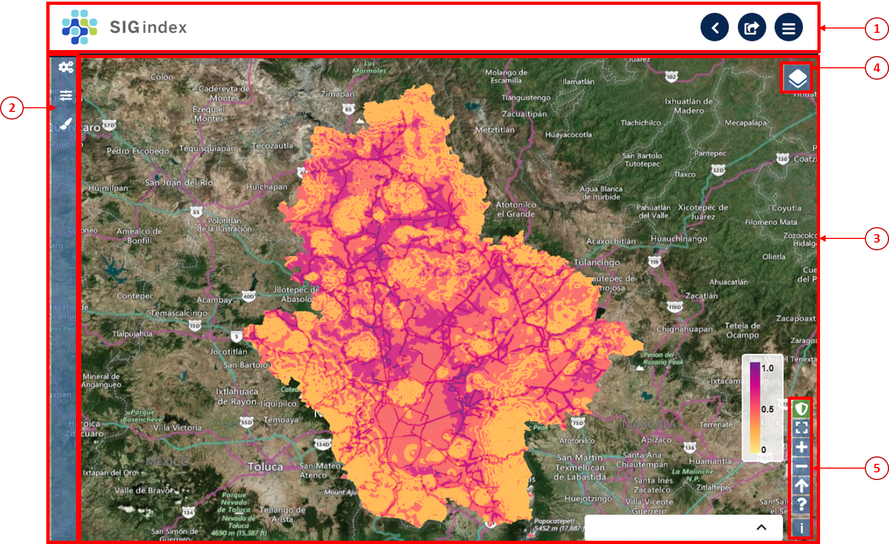
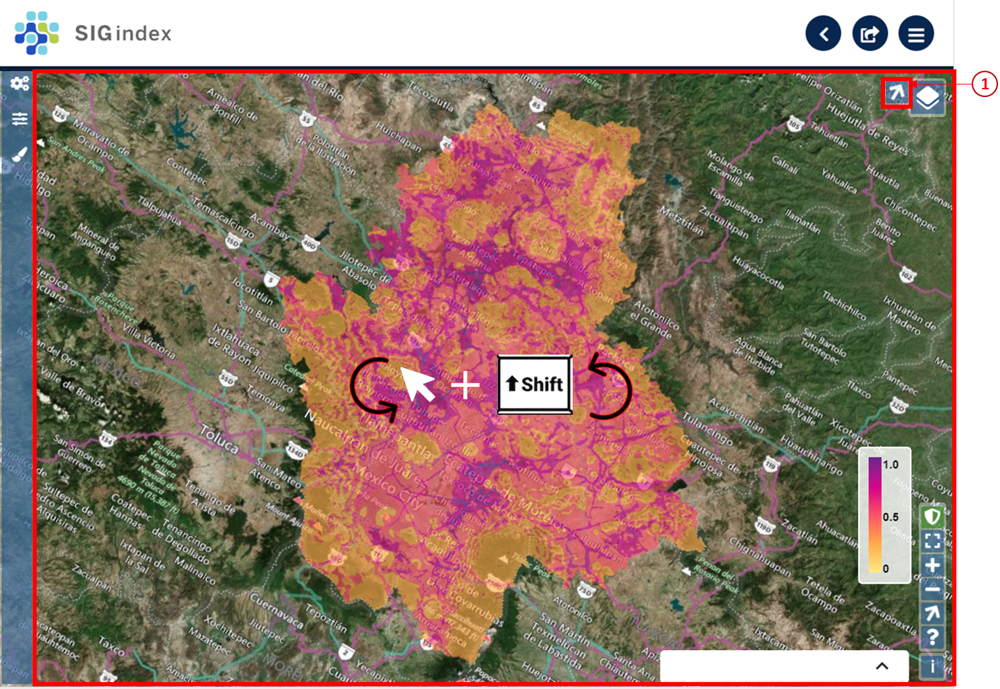
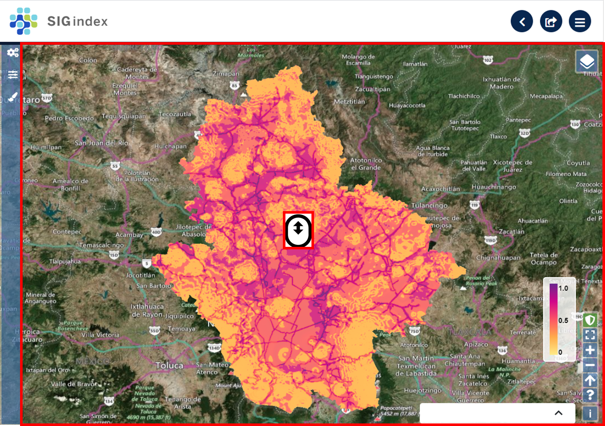
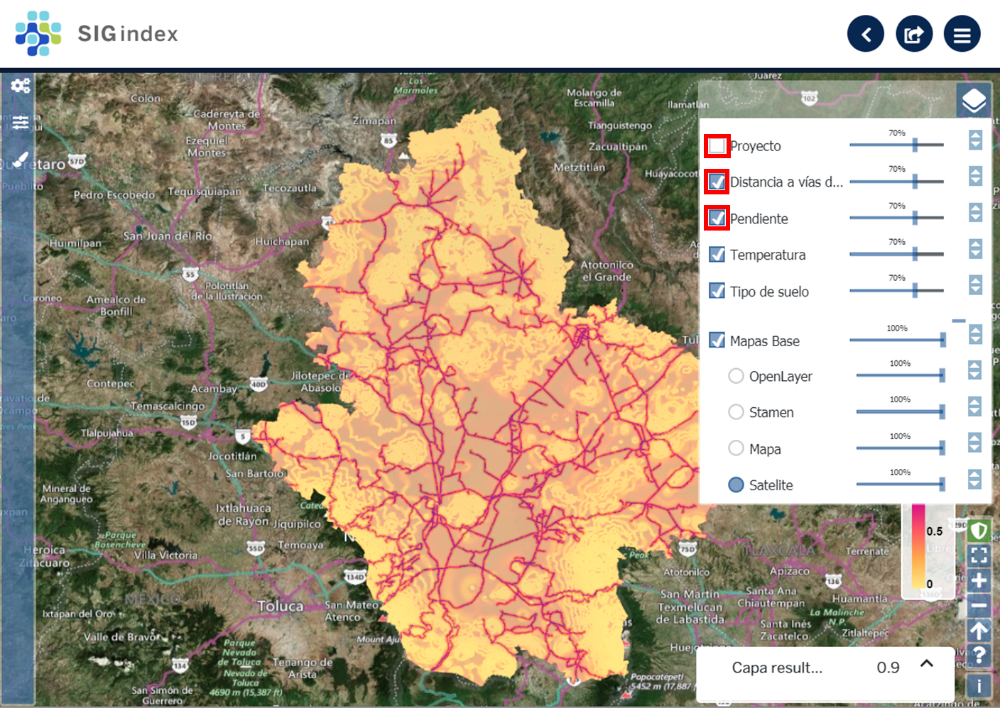
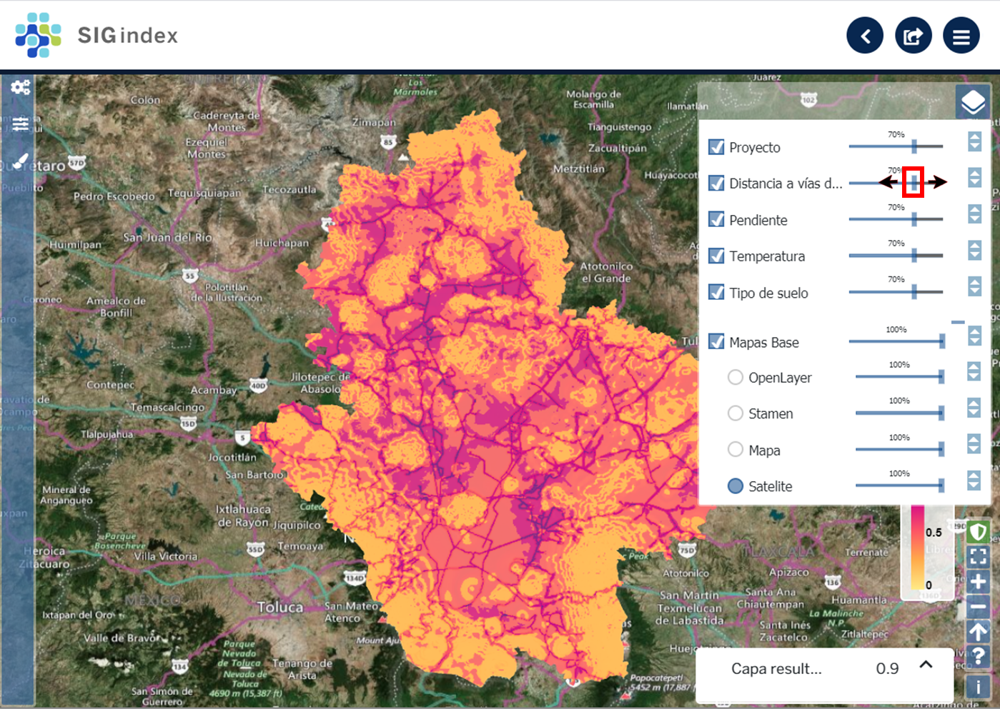

Sigindex¶
Guía de usuario de SIGIndex¶
1 Introducción¶
SIGIndex es una herramienta que integra mapas de aptitud a partir de funciones de valor. mediante una interfaz amigable.
SIGIndex tiene tres opciones de modos de decisión: el compensatorio (combinación lineal ponderada), el no compensatorio y el parcialmente compensatorio
La aplicación permite explorar interactivamente el mapa de aptitud generado, así como las capas que lo integran
1.1 ¿Por qué es necesario SIGindex?¶
2 Organización del manual¶
3 Organización de la interfaz¶
La interfaz está organizada en las siguientes secciones: el encabezado contiene al título y las funciones básicas,  en el panel izquierdo se ubica la barra de herramientas, y el visualizador de capas incluye
en el panel izquierdo se ubica la barra de herramientas, y el visualizador de capas incluye  los ajustes de despliegue de capas y
los ajustes de despliegue de capas y  los ajustes de visualización.
los ajustes de visualización.
{kind=link}
{kind=link}
3.1 Funciones básicas¶
Las funciones básicas son tres: botón de inicio, exportar resultados y regresar.
3.1.1 Botón de inicio¶
Al hacer clic en el botón de inicio  , se despliega una ventana con tres opciones: redirecciona al inicio (home) de la plataforma SIGplanning, muestra el nombre del usuario activo y cierra la sesión del usuario activo.
, se despliega una ventana con tres opciones: redirecciona al inicio (home) de la plataforma SIGplanning, muestra el nombre del usuario activo y cierra la sesión del usuario activo.
3.1.2 Exportar¶
Al hacer clic en el botón exportar  se despliega una ventana que descarga el mapa de aptitud normalizado o clasificado. Los mapas exportados en formato .zip incluyen una capa ráster en formato *.tif y el archivo de metadatos en formato *.xml.
se despliega una ventana que descarga el mapa de aptitud normalizado o clasificado. Los mapas exportados en formato .zip incluyen una capa ráster en formato *.tif y el archivo de metadatos en formato *.xml.
3.1.3 Regresar¶
SIGIndex tiene dos opciones para regresar al catálogo de proyectos y al resto de los módulos de SIGplaning: el botón regresar  y el ícono del módulo |b_icono_sigindex|.
y el ícono del módulo |b_icono_sigindex|.
3.2 Visualizador de capas¶
En el visualizador de capas se muestran los resultados de SIGindex, así como, los ajustes de despliegue de capas y los ajustes de visualización. En el visualizador se puede mover el mapa, rotar el mapa, hacer acercamientos y ver valores de la capa.
3.2.1 Mover el mapa¶
Al hacer clic en cualquier parte del visualizador de capas, mover el ratón en cualquier dirección hasta que el mapa esté en la ubicación deseada.
3.2.2 Rotar el mapa¶
Al hacer clic en cualquier parte del visualizador de capas, sin soltar el ratón, oprimir la tecla Shift y rotar la capa hasta llegar a la orientación deseada. Al rotar el mapa, aparece el botón del norte geográfico rotado . Al hacer clic sobre el norte geográfico, se reposiciona el mapa a la orientación original.
{kind=link}
3.2.3 Hacer acercamientos¶
Al hacer clic en cualquier parte del visualizador de capas, mover la barra de desplazamiento del ratón para acercarse o alejarse.
3.2.4 Valores de la capa¶
Al hacer clic sobre el pixel, se despliega la ventana de valores en la parte inferior derecha de la ventana, donde se indica el valor del pixel.
3.3 Ajustes de despliegue de capas¶
Los ajustes de despliegue de capas  permiten activar o desactivar capas, cambiar el orden de sobreposición de las capas, cambiar la opacidad de las capas y cambiar el mapa base.
permiten activar o desactivar capas, cambiar el orden de sobreposición de las capas, cambiar la opacidad de las capas y cambiar el mapa base.
3.3.1 Activar o desactivar capas¶
Al hacer clic sobre las casillas de verificación en la sección de ajustes de despliegue, se activan o desactivan las capas deseadas.
{kind=link}
3.3.2 Cambiar el orden de sobreposición de las capas¶
Para cambiar el orden de sobreposición de las capas, mantener oprimido el botón izquierdo del ratón sobre las flechas  que aparecen a la derecha del panel y desplazar las capas hacia abajo o arriba conforme al orden deseado.
que aparecen a la derecha del panel y desplazar las capas hacia abajo o arriba conforme al orden deseado.
3.3.3 Cambiar la opacidad de las capas¶
Al hacer clic sobre el control deslizante de opacidad de capas , desplazar a la derecha o izquierda hasta llegar a la opacidad deseada.
{kind=link}
3.3.4 Cambiar la capa base¶
SIGIndex tiene cuatro opciones de capas base: OpenLayer, Stamen, Mapa, Satelite, para cambiar la capa base oprimir el botón de opción para seleccionar el mapa base de su preferencia.
{kind=link}
Nota: La opción predeterminada es satélite.
3.4 Ajustes de visualización¶
La sección de ajustes de visualización se compone de seis botones: cambiar al visualizador de capas en pantalla completa, acercar el mapa, alejar el mapa, reajustar el norte geográfico, ver la guía rápida de controles de despliegue y  ver la licencia de la capa base.
ver la licencia de la capa base.
3.4.1 Mostrar/Ocultar ventana de valores¶
Al hacer clic en el botón mostrar/ocultar ventana de valores , el fondo del botón cambia a verde indicando que la ventana de valores esta activa , al hacer clic en un píxel de cualquier se despliega una ventana que muestra el valor del píxel del mapa de aptitud, y al hacer clic en el botón de la ventana de valores , se despliegan los valores de las funciones de valor (atributos).
{kind=link}
{kind=link}
{kind=link}
3.4.2 Poner el mapa en pantalla completa¶
Al hacer clic en el botón de pantalla completa , se muestra el área de visualización en la pantalla sin el resto de las secciones.
{kind=link}
Para salir de la pantalla completa, volver a oprimir el botón de los ajustes de visualización o la tecla Esc.
3.4.3 Acercarse o alejarse del mapa¶
Al hacer clic sobre el botón de acercar  , se aumenta el zoom en el visualizador de capas.
Al hacer clic sobre el botón de alejar
, se aumenta el zoom en el visualizador de capas.
Al hacer clic sobre el botón de alejar  , se disminuye el zoom en el visualizador de capas.
, se disminuye el zoom en el visualizador de capas.
3.4.4 Ajustar el norte del mapa¶
Al hacer clic en el botón de norte geográfico  , se reajusta la orientación del visualizador de capas a la posición original.
, se reajusta la orientación del visualizador de capas a la posición original.
3.4.5 Guía rápida de ajustes de visualización¶
Al hacer clic en el botón de guía rápida de controles de despliegue  , se despliega una ventana con tres opciones: rotar el mapa, seleccionar un polígono, y hacer zoom a una ventana específica.
, se despliega una ventana con tres opciones: rotar el mapa, seleccionar un polígono, y hacer zoom a una ventana específica.
3.5 Barra de herramientas¶
Cuenta con tres herramientas, Atributos  , Factor de progresión
, Factor de progresión  y Paleta de colores
y Paleta de colores  .
.
3.5.1 Atributos¶
Al hacer clic en el botón Atributos se despliega una ventana con seis secciones: nombre generado por el sistema, lista de despliegue de modos de decisión, atributos o funciones de valor, lista de pesos asignados a cada función de valor, casillas de verificación de los atributos seleccionados para integrar análisis de aptitud y botón de Generar mapa de aptitud.
3.5.1.1 Modos de decisión¶
Al hacer clic en la lista de despliegue  se muestran cuatro opciones: Compensatorio, Parcialmente compensatorio, No compensatorio, Combinación lineal ponderada.
se muestran cuatro opciones: Compensatorio, Parcialmente compensatorio, No compensatorio, Combinación lineal ponderada.
3.5.1.2 Selección y ponderación de atributos¶
En la ventana se despliegan todos los atributos (funciones de valor) preseleccionados y su ponderación, al hacer clic en el recuadro en blanco se puede modificar el peso de cada atributo manualmente o al hacer clic en las flechas para incrementar o disminuir hasta el valor deseado, así como seleccionar/deseleccionar al hacer clic en la casilla de verificación.

Obsérvese que la suma de los pesos debe ser igual a 1
3.5.1.3 Generar mapa de aptitud¶
Al hacer clic en el botón Generar mapa de aptitud se desplegará en el visualizador de capas, el mapa de aptitud con el nombre Proyecto.
3.5.2 Factor de progresión¶
Al hacer clic en el botón factor de progresión se despliega una ventana con el control deslizante. Al hacer clic en el botón del control deslizante y deslizar hacia la izquierda o derecha , se selecciona el factor de progresión. C.E. corresponde a una clasificación equidistante.
3.5.3 Paleta de colores¶
Al hacer clic en el botón paleta de colores , se despliegan los atributos (funciones de valor) y el mapa de aptitud (Proyecto). Cada capa cuenta con una lista de despliegue, al hacer clic en el botón de la lista de despliegue , elegir la paleta de colores deseada.
4 Requerimientos¶
6 Ejemplo de uso¶
7 Referencias¶
Alvarez-Yépiz, J.C., Martínez-Yrízar, A., Búrquez, A., Lindquist, C. 2008. Variation in vegetation structure and soil properties related to land use history of old-growth and secondary tropical dry forests in northwestern Mexico. Forest Ecology and Management 256: 355-366.
Bye, R., Cervantes, L., Rendón, B. 2002. Etnobotánica en la región de Chamela, Jalisco, México. En: No-guera, F., Vega-Rivera, J., García-Aldrete A., Quesada-Avendaño, M. Historia Natural de Chamela, pp. 545-559. Instituto de Biología, UNAM, México, DF.
Chao, A. 1987. Estimating the population size for capture-recapture data with unequal catchability. Biometrics 43, 783-791.
César Dachary, Alfredo y Stella Maris Arnaiz Burne (Eds.) (2005) Turismo rural. Modelos y propuestas. Universidad de Guadalajara. México.
CENAPRED. 2003. Integración de información para la estimación del Peligro Sísmico. Pág 61-74 En: Guía Básica para la Elaboración de Atlas Estatales y Municipales de Peligros y Riesgos, Sistema nacional de Protección Civil, 385pp.
Colín-García, G., Ibáñez-Castillo, L., Reyes-Sánchez, J. y R. Arteaga-Ramírez. 2013. Diagnóstico de la ero-sión hídrica de la cuenca del Río Pichucalco. Ingeniería agrícola y biosistemas 5(1): 23-31.
CONAGUA, 2012. Cobertura de agua potable por municipios y cobertura de alcantarillado por munici-pio. Atlas Digital del Agua de México, 2012. Sistema Nacional de Información del Agua. Consultado el 25/07/2014 en: http://www.conagua.gob.mx/atlas/mapa/28/index_svg.html y http://www.conagua.gob.mx/atlas/mapa/30/index_svg.html.
CONABIO 2012. Portal de Geoinformación, Sistema Nacional de Información sobre Biodiversidad. Con-sultado el 1/09/2014 en http://www.conabio.gob.mx/informacion/gis/
CONAGUA. 2012. Atlas Digital del Agua México 2012. Sistema Nacional de Información del Agua. Subdi-rección General Técnica. Gerencia de Aguas Subterráneas. Representación gráfica y espacial de las Zonas de Veda. Consultado el 7 de julio de 2014: http://www.conagua.gob.mx/atlas/mapa/36/index_svg.html.